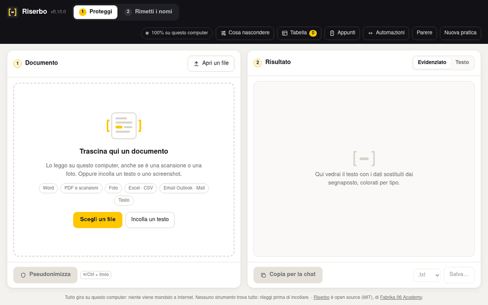
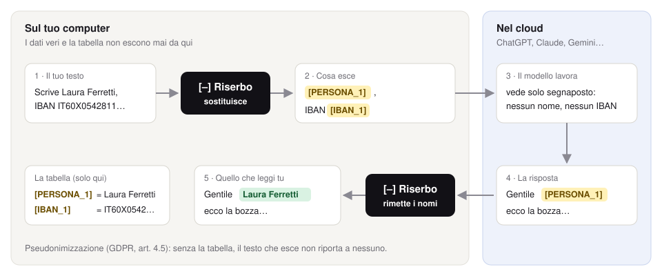

Usa ChatGPT, Claude e Gemini senza consegnargli i dati dei tuoi clienti.
Riserbo sostituisce nomi, codici fiscali, IBAN e indirizzi con segnaposto prima che il testo esca dal tuo computer, e nella risposta rimette i valori veri. Tutto in locale: niente account, niente telemetria.

Persone, aziende, codici fiscali, IBAN, indirizzi diventano [PERSONA_1], [IBAN_1]. I codici sono verificati con le cifre di controllo.
Riassume, risponde, traduce sul testo con i segnaposto. Lo stesso nome ha sempre lo stesso segnaposto, così il senso resta.
Nella risposta tornano i valori veri, e Riserbo ti avvisa se il modello ha perso o inventato un segnaposto.

È pseudonimizzazione, non anonimizzazione. Il fornitore del modello riceve testo da cui non può risalire alle persone; la tabella per tornare indietro resta solo sul tuo computer (GDPR, art. 4.5). Riserbo riduce il rischio e applica la minimizzazione, ma non toglie gli obblighi: contratto con il fornitore, registro dei trattamenti, informativa. E nessuno strumento trova tutto: rileggi prima di inviare.